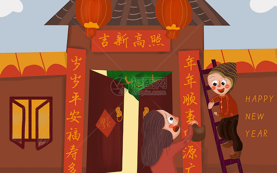
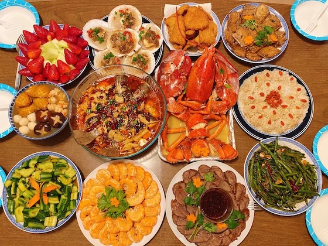
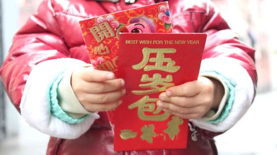

Trandistions in Lunar New Year
In preparation for the Lunar New Year, houses are thoroughly cleaned to rid them of inauspicious spirits, which might have collected during the old year. Cleaning is also meant to open space for good will and good luck.
Some households hold rituals to offer food and paper icons to ancestors. Others post red paper and banners inscribed with calligraphy messages of good health and fortune in front of, and inside, homes. Elders give out envelopes containing money to children. Foods made from glutinous rice are commonly eaten, as these foods represent togetherness. Other foods symbolize prosperity, abundance and good luck.
Here are some examples about tranditions that Chinese people are doing during the New Year.
-
Cleaning and Decorating Houses with Red Things
People give their houses a thorough cleaning before the Spring Festival, which symbolizes sweeping away the bad luck of the preceding year and making their homes ready to receive good luck. Red is the main color for the festival, as red is believed to be an auspicious color for the Lunar New Year, denoting prosperity and energy — which ward off evil spirits and negativity. Red lanterns hang in streets; red couplets and New Year pictures are pasted on doors.
-
Watching Lion and Dragon Dances
Lion dances and dragon dances are widely seen in China and Chinatowns in many Western countries during the Lunar New Year period. They are performed to bring prosperity and good luck for the upcoming year or event. There are more Chinese New Year traditions and customs, such as wearing new clothes, staying up late on Chinese New Year's Eve, watching the Spring Festival Gala, etc.
-
Enjoying a Family Reunion Dinner on Lunar New Year's Eve
Chinese New Year (Lunar New Year) is a time for families to be together. Chinese New Year's Eve is the most important time. Wherever they are, people are expected to be home to celebrate the festival with their families. The Chinese New Year's Eve dinner is called 'reunion dinner'. Big families of several generations sit around round tables and enjoy the food and time together.
-
Exchanging Red Envelopes and other Gifts
The most common gifts are red envelopes (or red packets, lìshì or lai see in Cantonese). Red envelopes have money in, and are often given to children and (retired) seniors. The red envelope (money) is called ya sui qian (压岁钱 /yaa sway chyen/), which means 'suppressing Sui [the demon]money'. Those who receive a red envelope are wished another safe and peaceful year.
-
Setting Off Firecrackers and Fireworks
From public displays in major cities to millions of private celebrations in China's rural areas, setting off firecrackers and fireworks is an indispensable festive activity. It is a way to scare away the evil and welcome the new year's arrival. Billions of fireworks go up in China at 12 am and in the first minutes of Chinese New Year, the most anywhere at any time of year.